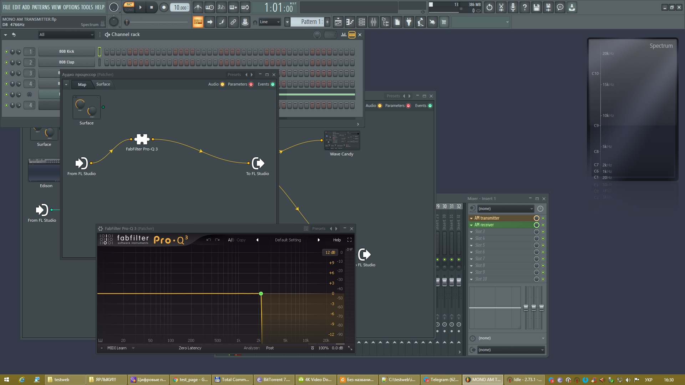
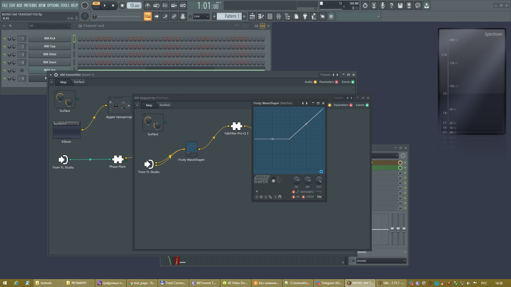
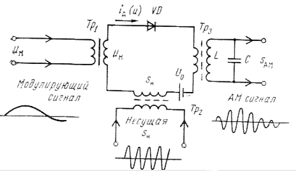
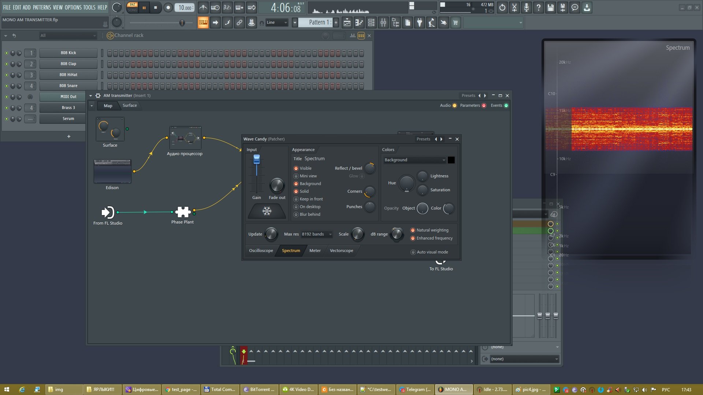
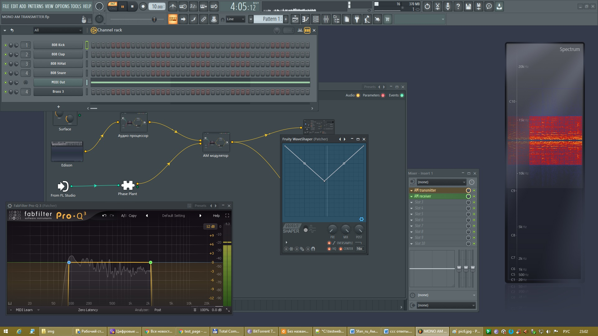
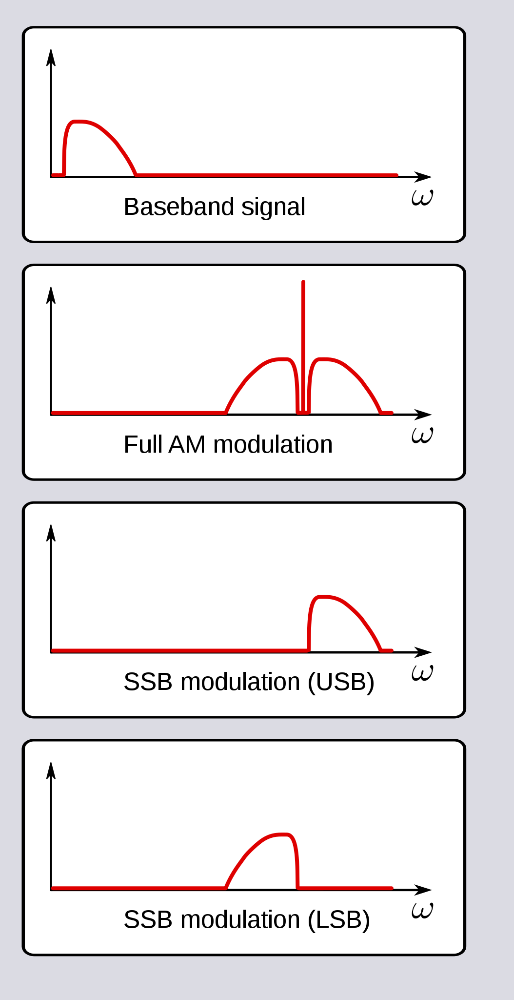
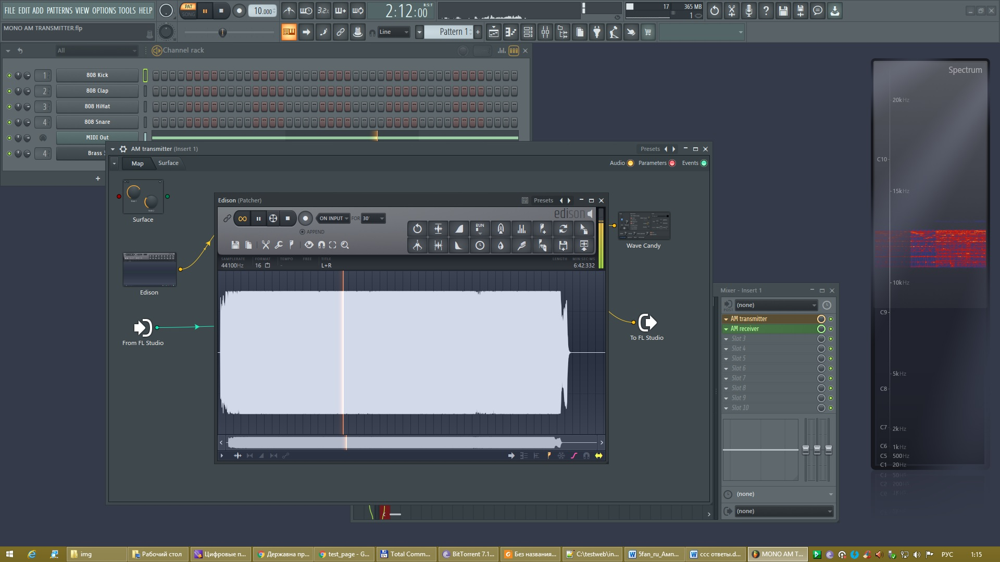

БЛОГ ВЛАДИМИРА КОЛЕСНИЧЕНКО
Охранно-пожарная автоматика и охранное видеонаблюдение
Радио-технологические штучки и мистер Никола Тесла
Цифровая обработка сигналов DSP, и радиосистемы

История изобретения радио

В первой половине XIX в. замечательный английский исследователь-самоучка Майкл Фарадей (1791-1867), открывший и описавший многие законы электричества и магнетизма, высказал гениальную задачу, что электромагнитные взаимодействия распространяются на расстояние не мгновенно, а с некоторой, пусть и очень большой, скоростью. Отсюда следовал вывод, что эти взаимодействия, или поля, могут существовать независимо от источника, их породившего. Так было положено начало открытию электромагнитных волн.
Любопытно, что свои слишком смелые для того времени соображения Фарадей не опубликовал, а, запечатав в конверт, передал в Королевское Общество (аналог нашей Академии наук) с просьбой вскрыть через 100 лет. Лишь в 1930-х гг. мы узнали о его предвидении, когда радиоволны уже широко использовались и для связи, и для радиовещания.
Что же произошло за эти 100 лет? Другой английский ученый Джеймс Кларк Максвелл (1831-1879) составил систему уравнений, носящих теперь его имя, которые обобщают известные опытные законы электричества. Эти уравнения до сих пор служат основой электродинамики - науки, имеющей дело с переменными во времени и пространстве электрическими и магнитными полями.
Из уравнений Максвела следовало, что могут существовать независимые от источников быстропеременные электромагнитные поля, переносящие энергию и распространяющиеся в вакуме со сккоростью 300 тыс. км/с. Эта скорость удивительно точно совпадала со скоростью света, что позволило предположить, что свет - это тоже электромагнитные волны, хотя и очень малой длины (около 0,5 мкм).
Практически электромагнитные волны удалось получить только через 20 лет, в 1886 г., немецкому ученому и экспериментатору Генриху Герцу (1857-1894). Он осуществил их передачу и прием, а также исследовал отражение и преломление. У Герца было много последователей, его опыты по получению электромагнитных волн с помощью диполя, искрового разрядника и катушки Румкорфа (индукционной катушки, создающей импульсы высокого напряжения) повторялись во многих лабораториях и университетах Европы и Америки.
Что же произошло за эти 100 лет? Другой английский ученый Джеймс Кларк Максвелл составил систему уравнений, носящих теперь его имя, которые обобщают известные опытные законы электричества. Эти уравнения до сих пор служат основой электродинамики - науки, имеющей дело с переменными во времени и пространстве электрическими и магнитными полями.
Из уравнений Максвела следовало, что могут существовать независимые от источников быстропеременные электромагнитные поля, переносящие энергию и распространяющиеся в вакуме со сккоростью 300 тыс. км/с. Эта скорость удивительно точно совпадала со скоростью света, что позволило предположить, что свет - это тоже электромагнитные волны, хотя и очень малой длины (около 0,5 мкм).
Практически электромагнитные волны удалось получить только через 20 лет, в 1886 г., немецкому ученому и экспериментатору Генриху Герцу (1857-1894). Он осуществил их передачу и прием, а также исследовал отражение и преломление. У Герца было много последователей, его опыты по получению электромагнитных волн с помощью диполя, искрового разрядника и катушки Румкорфа (индукционной катушки, создающей импульсы высокого напряжения) повторялись во многих лабораториях и университетах Европы и Америки
Знаменитый изобретатель в области электротехники Никола Тесла (1856-1943) сконструировал в 1891 г. резонансный трансформатор, позволяющий получать очень высокие напряжения высокой частоты, и высказал мысль о возможности передачи электромагнитной энергии вдоль поверхности земли без проводов. Построенная им в 1893 г. установка для передачи высокочастотной энергии без проводов содержала передающий и приемный резонансные трансформаторы, оснащенные высоко поднятыми антеннами. А. С. Попов назвал опыты Тесла "сигнализацией при помощи быстрых электрических колебаний". Практического применения с целью передачи энергии эга установка не получила, вероятно, из-за очень низкого КПД. Но идея передачи сигналов с помощью электромагнитных колебаний уже носилась в воздухе.
Ряд исследователей стремились укоротить длину волны генерируемых колебаний, уменьшая размеры разрядника. Среди них надо отметить английского ученого О. Лоджа, нашего соотечественника П. Н. Лебедева, профессора Болонского университета А. Риги. Другие ученые совершенствовали приемник, ведь сначала электромагнитные волны регистрировались наблюдением микроскопических искр в зазоре приемного вибратора, а для их возникновения нужна была очень большая напряженность поля.
Француз Э. Бранли изобрел когерер, прототип современного детектора. Это была трубочка с выводами, заполненная металлическими опилками. Из-за слоя окисла на них сопротивление было довольно большим, но под воздействием электромагнитной волны между частичками металла происходили микроскопические разряды, образовывались проводящие «мостики» и сопротивление когерера резко уменьшалось. Для восстановления способности приема трубочку надо было встряхивать. В 1890 г. Бранли описал свой прибор, назвав его «радиокондуктором».
Название «когерер» принадлежит Лоджу, построившему на его основе приемник с батареей и гальванометром, включенным в цепь когерера. Для встряхивания опилок в когерере служил часовой механизм с молоточком. Приемник Лоджа к 1894 г. обнаруживал электромагнитное излучение искрового вибратора Герца на расстоянии около 40 м
А. С. Попову удалось создать значительно более чувствительный приемник электромагнитных колебаний на основе когерера, который и был продемонстрирован на заседании Русского физико-химического общества 7 мая 1895 г. с указанием на практическую возможность использования электромагнитных колебаний для передачи сигналов. Эта дата и считается днем рождения радио. Несколько позже аналогичный приемник был изготовлен молодым итальянцем Гульельмо Маркони, который запатентовал это устройство в Англии в июне 1896 г. Вся дальнейшая деятельность Г. Маркони была связана с усовершенствованием приборов для телеграфирования без проводов.
Основные изобретения, сделанные и нашедшие применение до конца века: проволочные антенны на передающей и приемной станциях (Попов, 1895), настроенные в резонанс антенные цепи (Лодж, 1897), высокочастотный резонансный трансформатор, или «джиггер», в приемнике (Маркони, 1898), телефонная трубка для регистрации сигналов на слух (Рыбкин и Троицкий, 1899), новые типы «самовосстанавливающихся» когереров (ртутных, магнитных, электролитических, окисных), по своим свойствам уже приближающиеся к полупроводниковым детекторам.
Благодаря этим усовершенствованиям дальность радиосвязи быстро возросла с сотен метров (в первых опытах) до сотен километров. Первая в истории трансатлантическая передача радиосигнала на расстояние в 1800 миль между станциями в Полдью (Англия) и на полуострове Ньюфаундленд (Канада) была осуществлена Маркони и Флемингом уже в 1901 г. Были построены большие антенны, мощная и чувствительная (по тем временам) аппаратура, но передать и принять удалось всего лишь телеграфные посылки из трех точек - букву S. До начала регулярной коммерческой трансатлантической связи было еще далеко, но существование и практическая польза электромагнитных волн теперь уже ни у кого не вызывали сомнений.
Первую радиовещательную передачу провел проф. Р. А. Фессенден 24 декабря 1906 г. из местечка Бранд-Рок, штат Массачусетс, США. Она была музыкальной (при возможном в то время качестве!), исполнялись произведения Генделя. На радиостанции использовался электромашинный генератор незатухающих колебаний, отдающий мощность 60 кВт на частоте 50 кГц. Антенна подвешивалась на мачте высотой 128 м. Передатчик имел весьма неплохие параметры даже по современным представлениям, но радиолампы еще не были изобретены, и приемники существовали только детекторные! К тому времени уже появились первые кристаллические детекторы - прообраз современных полупроводниковых диодов, а прием на телефонные трубки (наушники) был давно известен.
ЦИФРОВАЯ ОБРАБОТКА СИГНАЛОВ С ПОМОЩЬЮ FL STUDIO
Цифровая обработка сигналов (ЦОС или DSP - digital signal
processing) обьединяет множество методов и технологий из широкого
круга областей науки и техники. Благодаря преимуществам, появля-
ющимся при переходе от аналоговых сигналов к цифровым, результа-
ты достижений ЦОС нвходят применение в таких приложениях, как
коммуникации, радиолокация и гидролокация, медецина, цифровое
аудио- и телевизионное вещание, метеорология и мн. др. Сегодня
ЦОС относится к числу базовых знаний, которые небохожимы учё-
ным и инженерам всех отраслей бех исключения.
Стимулом развития теории ЦОС является и то, что стоимость
цифровой обработки данных меньше аналоговой и продолжает сни-
жаться, а производительность вычислительных операций непрерывно
возрастает. Немаловажным является и то, что системы ЦОС отлича
ются высокой гибкостью. Их можно дополнять новыми программами
и перепрограммировать на выполнение различных операций без из
менения оборудования.
Цифровая обработка сигналов и ее преимущества. Цифровая
обработка сигналов – это обработка цифровых сигналов цифровыми
методами и цифровыми средствами.
Под сигналом будем понимать любую физическую переменную
(большей частью – напряжение), которая передает или содержит не
кий вид информации.
Цифровая обработка сигналов связана с цифровым представле
нием сигналов и использованием устройств цифровой обработки для
изменения или извлечения информации из сигналов.
В природе большинство сигналов – аналоговые, что означает их непрерывное изменение во времени. Аналоговые сигналы перед при менением в ЦОС дискретизируются, обычно равными интервалами времени, квантуются по уровню и преобразовываются в цифровой вид.
Цифровая обработка сигналов имеет следующие преимущества:
- Гарантированную точность. Точность определяется только разрядностью цифровых устройств, задействованных при реализации цифровых алгоритмов
- совершенную воспроизводимость. Можно идентично воспроизвести каждый элемент обработки сигнала, поскольку отсутствуют отклонения, обусловленные устойчивостью отдельных процессов, составляющих последовательность ЦОС
- отсутствие искажений, характерных для изменения параметров аналоговых устройств, по причине изменения температуры или процессов старения элементов
- высокую гибкость. Системы ЦОС можно запрограммировать и перепрограммировать на выполнения алгоритмов обработки любой сложности, которые невозможно выполнить при аналоговой обработке.
Цифровая обработка сигналов имеет два основных недостатка:
- относительно невысокую скорость обработки. Большинство
устройств ЦОС (АЦП, ЦАП, сигнальные процессоры, ПЛИС) не обладают скоростью, которую обеспечивают аналоговые устройства обработки сигналов.
Устройства ЦОС могут обрабатывать сигналы с шириной полосы до 1 ГГц. Сигналы с шириной более 1 ГГц все еще
обрабатываются аналоговыми методами. Тем не менее , устройства
ЦОС становятся все более скоростными.
- проблемы конечной разрядности. Если для представления сигнала привлекается недостаточное число битов, то снижается точность
цифровой обработки. В реальных ситуациях экономическая целесообразность по снижению стоимости аппаратных устройств ЦОС
предписывают использовать в алгоритмах ЦОС довольно ограниченное число разрядов, что приводит к существенному снижению качества работы системы ЦОС. К
счастью, разрядность устройств ЦОС
постоянно увеличивается.
Теория
Обычно в качестве переносчика используют гармоническое колебание высокой частоты - несущие колебание. Процесс преобразования первичного сигнала заключается в изменении одного или нескольких параметров несущего колебания по закону изменения первичного сигнала (т.е. в наделении несущего колебания признаками первичного сигнала) и называется модуляцией.
AM
Запишем гармоническое колебание, выбранное в качестве несущего, в следующим виде:
Это колебание полностью характеризуется тремя параметрами: амплитудой V, частотой w и начальной фазой j. Модуляцию мож¬но осуществить изменением любого из трех параметров по закону передаваемого сигнала.
Изменение во времени амплитуды несущего колебания пропорционально первичному сигналу s(t), т.е. V(t) = V + kAM s(t), где kAM – коэффициент пропорциональности, называется амплитудной модуляцией (АМ).
Несущее колебание с модулированной по закону первичного сигнала амплитудой равно: v(t) = V(t)cos(wt + j). Если в качестве первичного сигнала использовать то же гармоническое колебание (но с более низкой частотой W) s(t) = ScosWt, то модулированное колебание запишется в виде (для упрощения взято j = 0): v(t) = (V + kAMScosWt)coswt
Вынесем за скобки V и обозначим DV = kAMS и MAM = DV/V. Тогда...

Параметр МАМ = DV/V называется глубиной амплитудной модуляции. При МАМ = 0 модуляции нет и v(t) = v0(t), т.е. получаем немодулированное несущее колебание (2.1). Обычно амплитуда несущего выбирается больше амплитуды первичного сигнала, так что МАМ 1.
На рис. 6.3 показана форма передаваемого сигнала (а), несущего колебания до модуляции (б) и модулированного по амплитуде несущего колебания (в). Произведя в (6.2) перемножение, получим, что амплитудно-модулированное колебание

состоит из суммы трех гармонических составляющих с частотами w, w + W и w – W и амплитудами соответственно V, MAMV/2 и MAMV/2. Таким образом, спектр амплитудно-модулированного колебания (или АМ-колебания) состоит из частоты несущего колебания и двух боковых частот, симметричных относительно несущей, с одинаковыми амплитудами (рис. 6.4, б). Спектр первичного сигнала s(t) приведен на рис. 6.4, а.

Если первичный сигнал сложный и его спектр ограничен частотами и (рис. 6.4, в), то спектр АМ-колебания будет состоять из несущего колебания и двух боковых полос, симметричных относительно несущей (рис. 6.4, г).
Анализ энергетических соотношений показывает, что основная мощность АМ колебания заключена в несущем колебании, которое не содержит полезной информации. Нижняя и верхняя боковые полосы несут одинаковую информацию и имеют более низкую мощность.
Практика:
Создать сигнал с амплитудной модуляцией (АМ) с частотой несущей 15 кгц...
- Создать синусоидальный сигнал используя синтезатор PHASEPLANT, задать частоту сигнала 15 кгц
Будем создавать виртуальный передатчик
Мы будем использовать оболочку Patcher в микшере, создаем новую оболочку
в Patcher, назовём её АМ transmittter, в неё добавим источник сигнала Edison,
контейнер внутри патчера назвовем ее модулятор, создадим контейнер "Аудио процессор",
спектроанализатор WaveCandy.

Создание аудиопроцесоора
В созданом модуле Аудиопроцессор добавляем эквалайзер для ограничения спектра сигнала до 5 кгц для будущей станции в амплитудной модуляции
Будем использовать эквалайзер FabFilter
а теперь посмотрим на модуль АМ модулятора
Он состоит из двух входов сигнала несущей и сигнала низкой частоты обработаного аудиопроцессором которые подключены к Waveshaper, Waveshaper настроен на ВАХ (Вольт-Амперная характеристика) типа диод
На выходе стоит фильтр нижних частот эквалайзер Fabfilter таким образом подрезая лишние гармоники диодного модулятора
В реальности схема диодного модулятора выгляжит так:
В результате при воспроизведении несщего сигнала и модулируемого на WaveCandy спектроанализатора мы наблюдае расширение спектра основной несущей частоты по бокам
AM DSB
Двухполосная передача с подавлением несущей ( DSB-SC ) — это передача , в которой частоты, создаваемые амплитудной модуляцией (AM), симметрично разнесены выше и ниже несущей частоты , а уровень несущей снижен до минимально возможного уровня, в идеале полностью подавляется
В модуляции DSB-SC, в отличие от AM, несущая волна не передается; таким образом, большая часть мощности распределяется между боковыми полосами, что подразумевает увеличение охвата в DSB-SC по сравнению с AM при том же потреблении мощности.
Передача DSB-SC является частным случаем двухполосной передачи с уменьшенной несущей . Он используется для систем передачи данных по радио Этот режим часто используется в радиолюбительской голосовой связи, особенно на высокочастотных диапазонах.
Спектр
DSB-SC в основном представляет собой волну с амплитудной модуляцией без несущей, что снижает потери мощности и дает эффективность 50%. Это увеличение по сравнению с обычной AM-передачей (DSB), максимальная эффективность которой составляет 33,333%, поскольку 2/3 мощности приходится на несущую, которая не передает полезной информации, а обе боковые полосы содержат идентичные копии одной и той же информации. Односторонняя полоса с подавлением несущей (SSB-SC) эффективна на 100%.
Практика
Всё тоже самое, только в Wavesnaper делаем Вольт Амперную Характеристику в виде диодного моста типа балансный модулятор.
Ручку MIX выворачиваем на 100%
AM SSB
В радиосвязи однополосная модуляция ( SSB ) или однополосная модуляция с подавленной несущей ( SSB-SC ) — это тип модуляции , используемый для передачи информации, такой как звуковой сигнал , с помощью радиоволн . Усовершенствование амплитудной модуляции позволяет более эффективно использовать мощность передатчика и полосу пропускания . Амплитудная модуляция создает выходной сигнал, полоса пропускания которого в два раза превышает максимальную частоту исходной основной полосы частот сигнала. Однополосная модуляция позволяет избежать этого увеличения полосы пропускания и потери мощности на несущей за счет увеличения сложности устройства и более сложной настройки приемника.
Основная концепция
Радиопередатчики работают путем смешивания радиочастотного (РЧ) сигнала определенной частоты, несущей волны , с передаваемым аудиосигналом. В АМ-передатчиках это микширование обычно происходит в конечном РЧ-усилителе (модуляция высокого уровня). Менее распространено и гораздо менее эффективно выполнять микширование при малой мощности, а затем усиливать его в линейном усилителе. Любой метод создает набор частот с сильным сигналом на несущей частоте и с более слабым сигналом на частотах, простирающихся выше и ниже несущей частоты на максимальную частоту входного сигнала. Таким образом, результирующий сигнал имеет спектр , ширина полосы которого в два раза превышает максимальную частоту исходного входного аудиосигнала
SSB использует тот факт, что весь исходный сигнал кодируется в каждой из этих «боковых полос». Нет необходимости передавать обе боковые полосы плюс несущую, поскольку подходящий приемник может извлечь весь исходный сигнал либо из верхней, либо из нижней боковой полосы. Существует несколько методов устранения несущей и одной боковой полосы из передаваемого сигнала. Создание этого сигнала с одной боковой полосой слишком сложно, чтобы его можно было реализовать в каскаде конечного усилителя, как в случае с АМ. Модуляция SSB должна выполняться на низком уровне и усиливаться в линейном усилителе, где более низкая эффективность частично компенсирует преимущество в мощности, полученное за счет исключения несущей и одной боковой полосы. Тем не менее, SSB-передачи используют доступную энергию усилителя значительно более эффективно, обеспечивая передачу на большие расстояния при той же выходной мощности. Кроме того, прием SSB требует стабильномти частоты и избирательности, значительно превыщающих таковые у недорогих АМ-приемников, поэтому вещатели редко используют его. В двухточечной связи, где дорогие премники уже широко используются, их можно успешно настроить для приема передаваемой боковой полосы.
